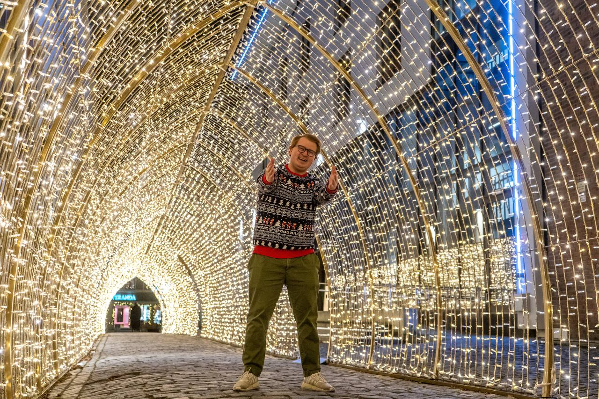

P1 Project - Group 50
Av: Kathrine Sveen, Ingrid Reite, Johannes Moen, Aksel Rønningen, Lasse Jørstad Olsen & Hannah Holstad
Publisert:
Vår klient
Even Nævdal er en talentfull norsk Youtuber og artist fra Trondheim. I sine yngre dager tilbrakte han mye tid til filming og ulike fritidsaktiviteter med venner. Uavhengig av disse aktivitetene, har Even alltid hatt en lidenskap for å nyte livet til det fulleste. Som ungdom tilbrakte han mye tid med vennene sine ved Nidarvolls kjente nærbutikk, “Memos”.
Inspirert av Eurovision Song Contest i 2013, bestemte Even seg for å lage en musikkvideo som en hyllest til Memos. Videoen gikk viralt på YouTube, og Memos' popularitet skøyt i været. Men dessverre, etter en tid, gikk butikken konkurs. Dette forsterket legendestatusen til Memos, med Evens musikkvideo som et varig minne om den ikoniske butikken.
Med denne erfaringen bak seg, og den uventede suksessen av hans musikkvideo, følte Even en dypere lidenskap for innholdsskaping. Siden da har han produsert et mangfold av videoer, sanger og annet innhold for sosiale medier. Med et økende publikum som elsker hans kreative arbeid, fortsetter Even å utforske nye muligheter og glede sine fans med engasjerende innhold.
Mer info
Purpose and goals:
Lage en nettside for Even Nævdal, der forskjellige aspekter ved hans karriere blir presentert for brukeren. Nettsiden skal gjøre det enklere for Even å nå ut til flere, ved at hans innhold blir enklere å finne og dele. Målet med nettsiden er altså å øke Evens synlighet, slik at hans innhold blir lettere å oppdage og dele med andre.
Audience:
Målgruppe: Barn og unge i alderen 12-25. Mange unge opp til 25 år kjenner til Memos fra tidligere, og dermed er han fortsatt relevant for dem.
Nettsiden bør:
- Ha en brukervennlig oppbygging og design rettet mot yngre brukere.
- Inneholde klart og moderne språk med minimalt med ren tekst.
- Ha en litt større skriftstørrelse for lesevennlighet.
- Inkludere tekst- og interaksjonsbokser som tydelig viser at man kan interagere med dem.
- Anvende underholdende, men lesbare fonter på overskrifter.
- Være visuelt tiltalende med mange bilder, sterke og koherente fargetemaer for å fange og beholde oppmerksomheten.
- Fremheve videoer, spesielt på forsiden.
- Overveie bruk av lydfunksjoner og animasjoner for å øke interaktivitet, spesielt for de yngste brukerne.
The content of the site and how it is organized:
"Fremsiden" inkluderer:
- Et forsidebilde som gir inntrykk av hans personlighet og stil.
- Site Map som gir besøkende en oversikt over nettsiden.
- En fremhevet YouTube video som representerer han nyeste eller mest populære arbeid.
- Kort biografi. En introduksjon om Even, hans bakgrunn, prestasjoner, og hva han fokuserer på som artist og Youtuber.
- Kommende hendelser. Datoer og detaljer om kommende konserter, opptredener, livestreamer også videre.
- Abonner-funksjon. En enkel og rask måte besøkende kan abonnere på Evens nyhetsbrev og kanaloppdateringer.
- Sosiale medier ikoner. Direkte linker til hans YouTube-kanal, TikTok, Instagram, Facebook også videre.
- Linker til streamingplatformer som Spotify og Apple Music, eller innebygde spillere.
"Om" inkluderer:
- Flere høykvalitetsbilder av Even som videre reflekterer hans personlighet igjennom visuelle inntrykk.
- Tekst om Even og hans arbeid.
"Shop" inkluderer:
- Denne funksjonen skal ta brukeren videre til en 3. parts nettbutikk hvor de kan handle merch. Denne inkludere logoer, slagord også videre.
- Bilder av klær og tilbehør med pris.
- Ideelt kan det filtreres etter hva brukeren er ute etter, type bukser, gensere, jakker også videre.
"Sosiale medier" inkluderer:
- Evens sosiale medier presenteres i detalj, hvor siden deles inn i fire segmenter, YouTube, TikTok, Instagram og Facebook.
- Linker til SoMe.
- Informasjon om hva som deles på hvilke platformer.
- Under segmentene YouTube og TikTok presenteres Evens nyeste og mest populære videoer. Det er gjennom disse videoene at publikum blir kjent med Even. Derfor blir dette den viktigste siden med tanke på formålet til nettsiden.
- YouTube. Presentasjon av 2 til 3 videoer, samt link til kanalen.
- TikTok. Link til profil, samt eksempler på innhold.
- Instagram. Et stilig bilde fra Evens katalog, samt link til profil.
- Facebook. Link til profil.
"Musikk" inkluderer:
- Informasjon om Evens lange musikkarriere.
- Eksempler på ny og gammel musikk.
- Link til Spotify og Apple Music.
- Link til musikkvideoer. Det er fra en av de vi velger en musikkvideo som skla vises på siden. Litt av dette kommer til å ligge under YouTube innen sosiale medier kategorien fra før, men her vil det være fokus på musikkvideoene.
"Kontakt/Samarbeid/Booking" inkluderer:
- Informasjon om hvordan å kontakte Even ved interesse for samarbeid, spons, booking også videre.
- Mailadresser.
- Evt andre kontaktmuligheter.
- Eksempler på tidligere samarbeid, da f.eks. Matkroken.
Functional and Non-Functional Requirements:
Funksjonelle krav:
- Brukeren skal kunne finne fram til Memos mest spilte sanger, og få link til profilen på Spotify.
- Brukeren skal kunne finne fram til nettbutikken, og skal kunne kjøpe en valgfri artikkel.
- Brukeren skal kunne finne kontaktinfo om Memos, dvs. Link til Spotify, Youtube, Tiktok, samt epostadresse hva han har produsert tidligere og hva han ønsker å oppnå I framtiden.
Ikke-funksjonelle krav:
- Nettsiden skal kunne håndtere opptil 500 brukere av gangen, og skal innen 2 sek ha prosessert alle requests fra brukeren (f.eks. trykke på en link).
- Nettsiden skal tilby å spille av musikkvideoer og annet innhold fra Memos, slik at brukeren kan finne dette ved maks tre klikk.
- Nettsiden skal være morsom og enkel å bruke, og være egnet til at barn og unge fra 12 år og opp skal forstå hvordan å bruke nettsiden.